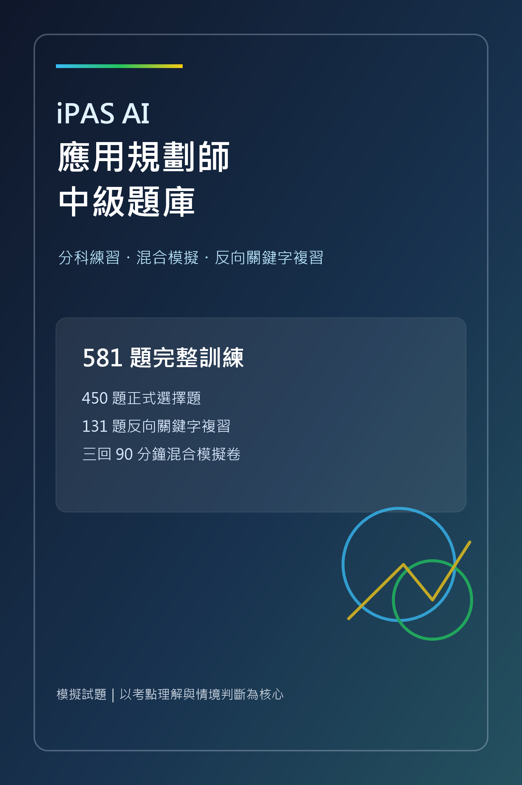

電子書
iPAS AI 應用規劃師中級題庫：581 題分科練習、混合模擬與反向關鍵字複習
以考點理解與情境判斷為核心的 581 題模擬試題與完整訓練

iPAS AI 應用規劃師中級題庫：581 題分科練習、混合模擬與反向關鍵字複習
以考點理解與情境判斷為核心的 581 題模擬試題與完整訓練
《iPAS AI 應用規劃師中級題庫》包含 450 題正式選擇題、131 題反向關鍵字複習與三回 90 分鐘混合模擬卷，共 581 題完整訓練。本書以考點理解與情境判斷為核心，協助考生熟悉題型結構、提升判斷速度，是考取 iPAS AI 中級證照的最佳解題工具書。
作品介紹；目前未提供購買或試閱入口